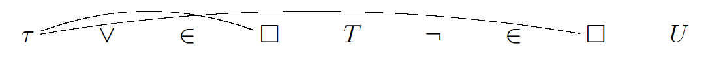
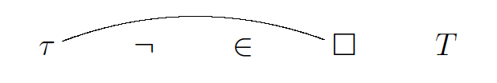

LANGUAGE
We adopt N. Bourbaki's $\tau$-calculus as the logic system in our theory.
SYMBOLS AND ASSEMBLIES
The symbols of the mathematical theory $\mathcal{T}$ (or simply the theory $\mathcal{T}$) are the following:
- The letters.
- The logical symbols: $\square$, $\tau$, $\vee$, $\neg$.
- The predicate symbols: $=$, $\in$.
An assembly in the theory $\mathcal{T}$ is a sequence of symbols of the theory $\mathcal{T}$, in which
logical symbols $\tau$ and $\square$ may be connected in pairs by lines (read: links).
Example 1.

is an assembly.
Explicitly writing down assemblies will result in difficulties both for the authors and for the readers. For this reason, abbreviating symbols are used. The readers should notice that abbreviating symbols do not belong to formal theory.
Also, from now on, we will use letters to represent assemblies. The meaning will be clarified if ambiguity appears.
Example 2. The assembly $\vee\neg$ is represented by $\implies$.
It $A$ and $B$ are assemblies, then we shall denote by $AB$ the assembly
obtained by writing the assembly $B$ on the right of the assembly $A$.
Example 3. It $A$ and $B$ are assemblies, then we shall denote by $\vee A\neg B$ the assembly obtained by writing, from
left to right, the symbol $\vee$, the assembly $A$, the symbol $\neg$, the assembly $B$.
If $A$ is an assembly and $x$ is a letter. We shall denote by
$\tau_x(A)$ the assembly constructed as follows: form the assembly $\tau A$, connect
each occurrence of $x$ in $A$ to the $\tau$ on the left of $A$ by line, and then
replace $x$ everywhere it occurs in $A$ by the symbol $\square$. The assembly denoted
by $\tau_x(A)$ therefore does not contain $x$.
Example 4.
The assembly $\tau_x(\neg \in xT)$ represents

If $A$ and $B$ are assemblies and $x$ is a letter. The assembly
obtained by replacing $x$, wherever it occurs in $A$, by the assembly $B$
is denoted by $(B | x) A$ (read: $B$ replaces $x$ in $A$). If $x$ does not
appear in $A$, then $(B|x) A$ is identical with $A$. In particular,
$(B|x)\tau_x(A)$
is identical with $\tau_x(A)$.
Example 5.
If we replace $x$ by $\square$ wherever $x$ occurs in the assembly
$\vee\in xT = xx$, we obtain the assembly $\vee\in\square T = \square\square$.
An assembly is of the first species if it begins with $\tau$, or if it consists of a single letter. Otherwise it is
of the second species.
A formative construction in the theory $\mathcal{T}$ is a sequence of assemblies in the theory $\mathcal{T}$ which
has the property that for each assembly $A$ of the sequence, one of
the following conditions is satisfied :
- $A$ is a letter.
- There is in the sequence an assembly $B$ of the second species,
preceding $A$, such that $A$ is $\neg B$.
- There are assemblies $B$ and $C$ of the second species (distinct
or not), preceding $A$, such that $A$ is $\vee BC$.
- There is an assembly $B$ of the second species, preceding $A$, and
a letter $x$ such that $A$ is $\tau_x(B)$.
- There is a specific sign $s$, and assemblies
$B$, $C$ of the first species, preceding $A$, such that $A$ is
$sBC$.
The assemblies of the first species which appear
in the formative constructions of the theory $\mathcal{T}$ are called terms. The assemblies of the second species which appear
in the formative constructions of the theory $\mathcal{T}$ are called relations.
SOME ABBREVIATIONS
From now on, brackets are used to separate assemblies, but shall be left out if the context is clear. The following abbreviations are made for convenience:
- If $A$, $B$ are relations, then we write $A \vee B$ (read: $A$ or $B$) instead of $\vee AB$ and $A\implies B$ (read: $A$ implies $B$) instead of $\implies AB$.
- If $A$, $B$ are relations, then we use $A\wedge B$ (read: $A$ and $B$) for $\neg((\neg A)\vee (\neg B))$, $A\impliedby B$ (read: $A$ is implied by $B$) for $(\neg B)\vee A$ and $A\iff B$ (read: $A$ if and only if $B$) for $((\neg A)\vee B)\wedge ((\neg B)\vee A)$.
- If $R$ is a relation, then we use $(\exists x)R$ (read: there exists $x$ such that $R$ holds) for $(\tau_x(R)|x)R$ and $(\forall x)R$ (read: for all $x$, $R$ holds) for $\neg((\tau_x(R)|x)(\neg R))$.
- If $A$, $B$ are terms, then we write $A \in B$ (read: $A$ belongs to $B$) instead of $\in AB$ and $A=B$ (read: $A$ is equal to $B$) instead of $=AB$.
- If $R$ is a relation, $x$ is a letter, then we use $(\exists !x)R$ (read: there exists only $x$ such that $R$ holds) for $(\exists x)(\forall y)(R\iff (x=y))$.
- If R is a relation, $T$ is a term, $x$ is a letter, then we use $(\forall x\in T)R$ (read: for all $x\in T$, $R$ holds) for $(\forall x)((x\in T)\implies R)$ and use $(\exists x\in T)R$ (read: there exists $x\in T$ such that $R$ holds) for $(\exists x)((x\in T)\wedge R)$.
AXIOMS AND THEOREMS
AXIOMS
Certain relations are called axioms of the theory $\mathcal{T}$.
LOGICAL AXIOMS
Theory $\mathcal{T}$ contains the following rules to construct logical axioms:
If $A$ is a relation of the theory $\mathcal{T}$, the relation \[(A \vee A)\implies A\] is an axiom of the theory $\mathcal{T}$.
If $A$ and $B$ are relations of the theory $\mathcal{T}$, the relation \[A \implies (A \vee B)\] is an axiom of the theory $\mathcal{T}$.
If $A$ and $B$ are relations of the theory $\mathcal{T}$, the relation \[(A \vee B)\implies (B \vee A)\] is an axiom of the theory $\mathcal{T}$.
If $A$, $B$, and $C$ are relations of the theory $\mathcal{T}$, the relation \[(A \implies B) \implies ((C \vee A) \implies (C \vee B))\]
is an axiom of the theory $\mathcal{T}$.
If $R$ is a relation of the theory $\mathcal{T}$, $T$ is a term of the theory $\mathcal{T}$, and $x$ is a letter, then the
relation \[(T|x)R \implies (\exists x)R\] is an axiom of the theory $\mathcal{T}$.
If $x$ is a letter, $T$ and $U$ are terms of the theory $\mathcal{T}$, and $R$ is a relation of the theory $\mathcal{T}$, then the relation \[(T = U) \implies (((T|x)R) \iff ((U|x)R))\] is an axiom of the theory $\mathcal{T}$.
If $R$ and $S$ are relations of the theory $\mathcal{T}$ and $x$ is a letter, then the relation
\[((\forall x)(R \iff S)) \implies (\tau_x(R) = \tau_x(S))\] is an axiom of the theory $\mathcal{T}$.
SET-THEORETIC AXIOMS
Other than logical axioms, there are set-theoretic axioms of the theory $\mathcal{T}$. The set-theoretic axioms system in theory $\mathcal{T}$ is called Zermelo-Fraenkel system with the axiom of choice (ZFC). In order to clarify ZFC system, we make many abbreviations, which will be introduced when needed.
Assume $x, y, z, s$ are different letters, then we have the following axioms:
Axiom of Empty Set
\[
(\exists s)(\forall x)(\neg(x\in s))
\]
We use $\emptyset$ as an abbreviation of $\tau_s((\forall x)(\neg(x\in s)))$.
Axiom of Extensionality
\[
(\forall x)(\forall y)((\forall z)((z\in x)\iff (z\in y))\implies (x=y) )
\]
Axiom of Pairing
\[
(\forall x)(\forall y)(\exists s)(\forall z)((z\in s)\iff ((z=x)\vee (z=y)))
\]
If $T, U$ are terms of the theory $\mathcal{T}$, then we use $\{T,U\}$ as an abbreviation of the term \[\tau_x((\forall z)((z\in s)\iff ((z=T)\vee (z=U)))).\]
Especially, we use $\{T\}$ as same as $\{T, T\}$.
Axiom of Power Set
\[
(\forall y)(\exists s)(\forall z)( (z\in s)\iff ((\forall x\in z)( x\in y ) ) )
\]
If $T$ is a term of the theory $\mathcal{T}$, we use $\mathcal{P}(T)$ as an abbreviation of the term \[\tau_s( (\forall z)( (z\in s)\iff ((\forall x\in z)( x\in T ) ) ) ).\]
Axiom of Union
\[
(\forall y)(\exists s)(\forall z)( (z\in s) \iff (\exists x\in y)( z\in x ) )
\]
If $T$ is a term of the theory $\mathcal{T}$, we use $\bigcup T$ as an abbreviation of the term \[\tau_s( (\forall z)( (z\in s) \iff (\exists x\in T)(z\in x) ) ).\]
We use $\bigcap T$ as same as $\{ x\in (\bigcup T)|(\forall y\in T)(x\in y ) \}$.
Axiom of Infinity
\[
(\exists y)((\emptyset \in y) \wedge ((\forall x\in y)( (\bigcup\{x,\{ x\}\})\in y )))
\]
Axiom of Regularity
\[
(\forall y)( (\neg(y=\emptyset)) \implies ( (\exists x\in y) (\forall z\in y)( \neg(z\in x) ) ) )
\]
Assume $x, y, z, s$ are different letters, then the following rules construct axioms:
Rule of Comprehension
If $R$ is a relation of the theory $\mathcal{T}$ which does not contain letter $s$, then
\[
(\forall y)(\exists s)(\forall x)((x\in s)\iff ((x\in y)\wedge R ) )
\]
is an axiom.
If $T$ is a term of the theory $\mathcal{T}$ and $R$ is a relation of the theory $\mathcal{T}$ which does not contain letter $s$, we use $\{ x\in T| R \}$ as an abbreviation of the term \[\tau_s( (\forall x)((x\in s)\iff ((x\in T)\wedge R ) ) ).\]
Rule of Replacement
If $R$ is a relation of the theory $\mathcal{T}$ which contains letters $x,y,z$, then
\[
(\forall z)( ((\forall x\in z)( (\exists !y)R ))\implies ((\exists s)(\forall y)( (y\in s)\iff((\exists x\in z)R ) )) )
\]
is an axiom.
If $R$ is a relation of the theory $\mathcal{T}$, $T$ is a term of the theory $\mathcal{T}$, we use $R[T]$ as an abbreviation of the term \[\tau_s( ((\forall x\in T)( (\exists !y)R ))\implies ((\exists s)(\forall y)( (y\in s)\iff((\exists x\in T) R ) )) ).\]
THEOREMS
A proof in the theory $\mathcal{T}$ is a sequence of relations of the theory $\mathcal{T}$ such that for every relation $R$ in the sequence at least one of the following conditions is satisfied:
$R$ is an axiom.
There are relations $S, G$ in the sequence which precede $R$, such that $G$ is $S\implies R$.
A relation $R$ of the theory $\mathcal{T}$ is a theorem of the theory $\mathcal{T}$ if $R$ appears in a proof in the theory $\mathcal{T}$; if $x$ is a letter, $T$ is a term of the theory $\mathcal{T}$, and $(T|x)R$ is a theorem of the theory $\mathcal{T}$, then we say term $T$ satisfies relation $R$ in the theory $\mathcal{T}$. For the sake of clearness, we will write proof vertically.
Example 6.
if $A$ is a relation of the theory $\mathcal{T}$, then relation $A\iff A$ is a theorem of the theory $\mathcal{T}$.
Proof.
\begin{align*}
&A\implies (A\vee A)\\
&(A\vee A)\implies A\\
&((A\vee A)\implies A)\implies ((A\implies (A\vee A))\implies (A\implies A) )\\
&(A\implies (A\vee A))\implies (A\implies A)\\
&A\implies A\\
&(A\implies A)\implies (A\iff A)\\
&A\iff A
\end{align*}